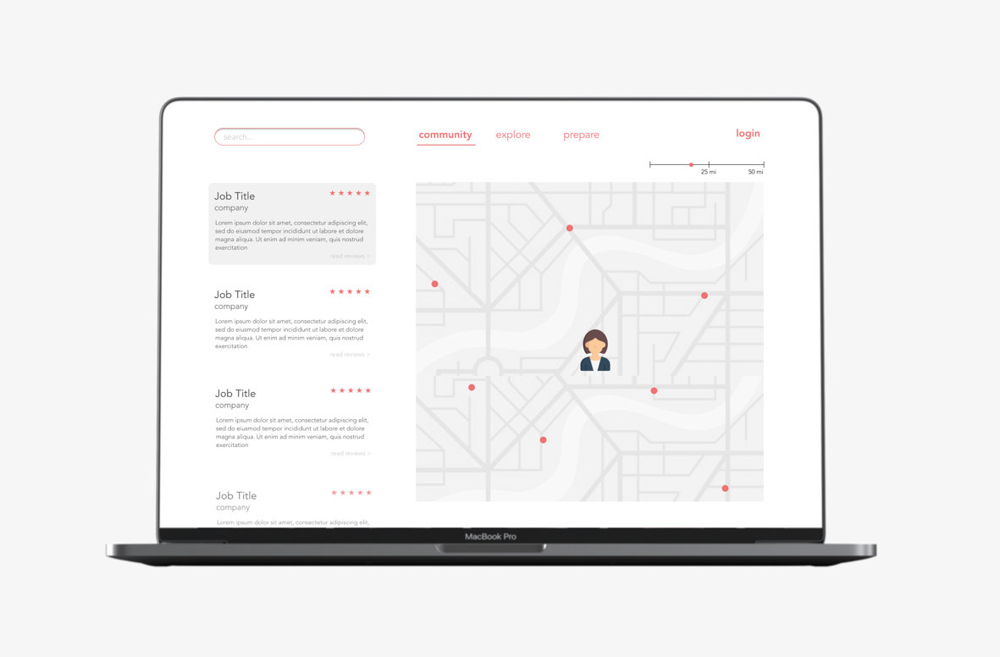

February 2020
A mobile app aimed at making the experience of submitting personal maintenance requests fast and convenient.

January - May 2019
As part of a larger research effort to understand career development, this research opportunity focused on using technology to improve the job search process for under-resourced populations.
August - December 2019
TeachIt is an online platform aimed at helping teachers effectively integrate technology in their classrooms.